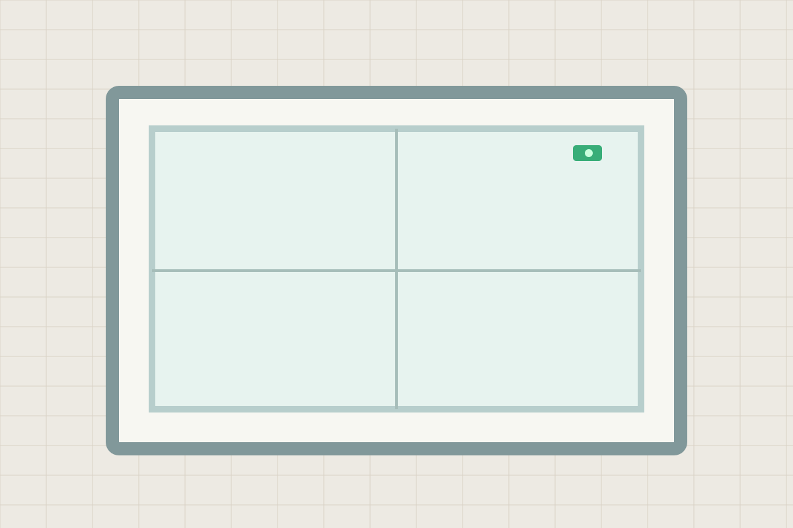

Keep a familiar point of contact
Speak to people who understand the design, the decisions behind it and the way the space was put together. A quick conversation can help you find the right next step.
Long-term performance
The relationship carries on after opening day. We stay available for advice, maintenance planning and the adaptations that help your workplace keep pace with your business.
Discuss your project
How we can help
Speak to people who understand the design, the decisions behind it and the way the space was put together. A quick conversation can help you find the right next step.
Get practical advice on looking after finishes, furniture and fittings, using the operating information and planning routine maintenance. We can help identify when the right specialist should be involved.
Review a growing team, a different way of working or a new technical requirement. We can help with layout adjustments, additional furniture, meeting-room improvements and changes to AV, IT or security.
Discuss what you have learnt from using the office and where a considered upgrade could help. We can advise on scope, timing and how to carry out changes around a working business.
A practical starting point
Start a conversation
A question about maintenance, a change in layout or an idea for the future is enough to start a conversation.
Get in touchPROJECT NOTE
Keep the operating information and maintenance records accessible, and tell us when your needs change. The people who helped shape the workplace can help you make the next decision with confidence.